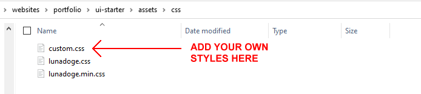
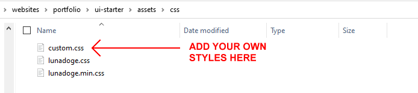

What do you want to create?
Hero block
Grab the attention of visitors to your website. Nine hero block layouts to choose from.
One column
The simplest layout. Just a single column of content, left to right across the screen.
Two-column split
Text in one column and an image or video in the other. One of the most widely-used layouts.
Two columns
Two side-by-side columns of content. A good choice for sections with lots of text.
Three columns
Three side-by-side columns of content. Probably the most widely-used of all layouts.
Four columns
A good choice for small amounts of text with small images or icons.
Contact form
A basic form with Name, Email and Message fields. Add a FormID from Formspree or similar.
Footer
A single-column footer with various navigation links and social media contact points.
Menu
A responsive menu for desktop and mobile screens. Requires assert/js/menu.js.
You will need the following stylesheets and JavaScript file:
The lunadoge.css (human-readable version) or lunadoge.min.css (faster-loading, minified version).
The custom.css stylesheet that you will use to amend your web page design according to your requirements.
The menu.js JavaScript file.
The index.html 'getting started' web page, which has links to the above CSS and JS files.
This web page also includes some sample semantic HTML mark-up tags and has links to three icon sets: Font Awesome, Line Awesome and Google Material UI.
How to use this UI-Kit builder
For each website project you want to build:
- Create a new project folder and download the 'getting started' index.html web page to it.
- Create two sub-folders, named 📁 assets/css and 📁 assets/js, inside your project folder.
- Download the CSS files and JS file to your sub-folders.
Into the index.html web page, you will paste the HTML content you copy from the UI-Kit app.

Into the custom.css stylesheet, you will paste your own styles to control the appearance of the web layout you create.
 

This CSS file makes extensive use of so-called custom properties or CSS variables.
The placeholder assets
The UI-Kit links to several placeholder images and video files help you design your web layouts.
When creating your website projects, replace these assets with your own images and videos.
Also, remove any links to icon sets you are not using. And link your web page(s) to the faster-loading lunadoge.min.css stylesheet.
That's it. Happy web designing!